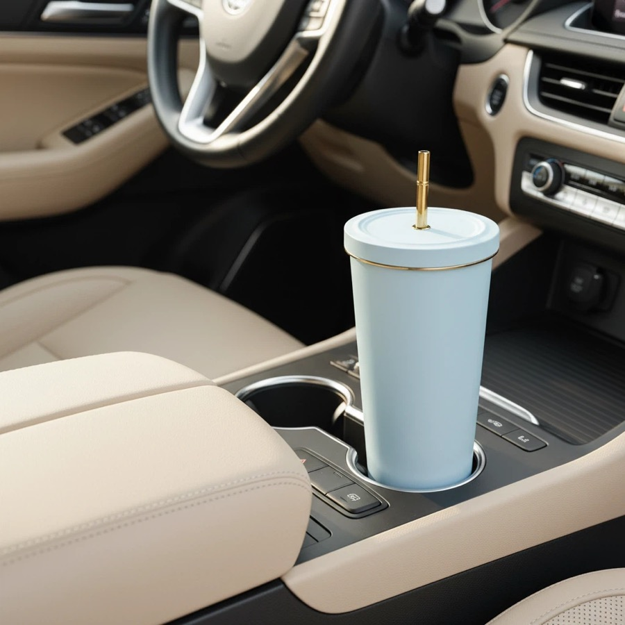
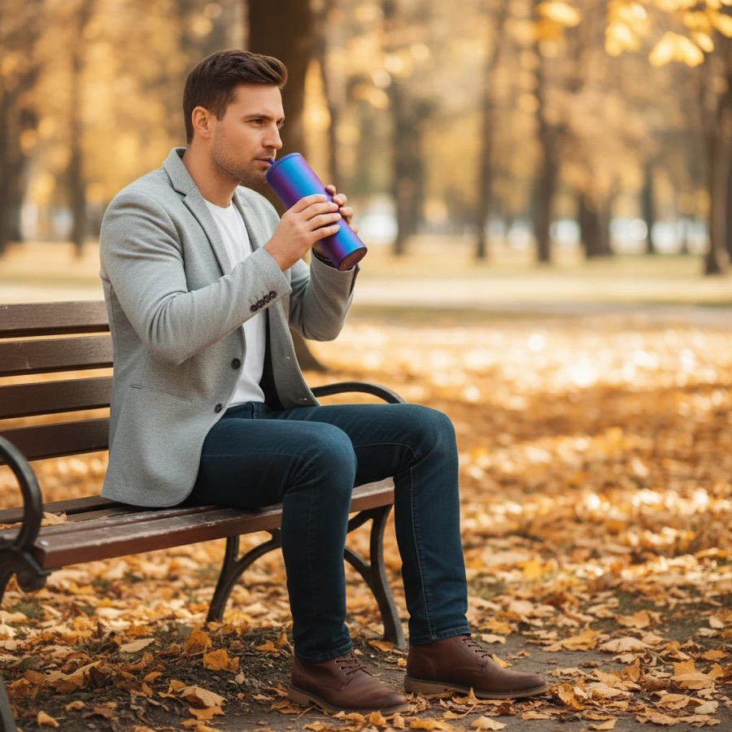

TikTok Shop Visual Product Testing
Live commerce and social sellers looking for visual tumblers, colorful bottles and small-batch launch options.
Custom drinkware sourcing guide
HDS Drinkware, the export brand of Shanxi Huandingsheng Industry and Trade Co., Ltd., coordinates TikTok Shop visual product testing for TikTok Shop sellers, live commerce teams and social sellers. This page covers the product, MOQ, sample, packaging, QC and shipping decisions specific to that buying intent.


Live commerce and social sellers looking for visual tumblers, colorful bottles and small-batch launch options.
This page is about fast visual commerce tests, not distributor repeat-order planning. Selected stock-based logo projects can start from 200 pcs; final MOQ and scope are confirmed in the quotation.
visual tumblers, colorful bottles, gift cups and short-cycle test products can be discussed by capacity, color, finish, lid, accessory, packaging and destination market. HDS helps buyers compare practical options instead of pushing a single retail-style SKU.
MOQ starts from 200 pcs for selected custom drinkware projects. The final MOQ depends on material, color, logo method, packaging, sample needs and current supply chain availability.
Test products can include selected stainless steel tumblers, colorful plastic bottles and decorated gift drinkware. Exact material, lid, coating, accessory and food-contact documentation are confirmed for the quoted SKU and destination.
Logo customization support includes laser engraving, silk screen printing, UV printing, heat transfer, labels and packaging logo placement. The best method depends on product surface, artwork colors and buyer channel.
A TikTok Shop test-order QC plan can cover sample appearance under normal lighting, logo position, lid and accessory fit, agreed function checks, packaging presentation, carton data and retained-sample control for reorders.
Product comparison
| Option | Best For | Customization Focus | Buyer Notes |
|---|---|---|---|
| Entry test order | New sellers and first projects | Stock color, simple logo, standard packing | Useful when the buyer needs to validate demand with lower inventory pressure. |
| Private label order | TikTok Shop sellers, live commerce teams and social sellers | Logo, color, packaging, barcode and carton marks | Better for buyers who need a repeatable product line. |
| Gift packaging order | Gift companies and corporate buyers | Gift box, insert, card, tote bag and bundle planning | Presentation and sample approval should be confirmed early. |
| Wholesale repeat order | Distributors and wholesale buyers | Stable product, mixed colors, cartons and shipping plan | Best when reorder timing and carton data matter. |
Direct answer for social sellers
Use one controlled product story: approve the exact sample, limit the first color split, choose one clear logo route, keep packaging practical, and define a reorder trigger from actual content response, conversion, returns and sell-through. Do not scale from a supplier photo or a single viral view count.
| Test Variable | What to Show | Confirm Before Bulk | Scaling Risk |
|---|---|---|---|
| Product action | Lid, straw, handle, size and intended use | Exact sample, dimensions and accessories | Video promise does not match delivered product |
| Visual finish | Color, coating, gradient, texture or decoration | Sample under normal lighting and quantity per color | Edited images hide finish variation |
| Branding | Logo size and visibility in close and medium shots | Method, position, proof and durability expectation | Logo is too small or inconsistent |
| Packaging | Unboxing route appropriate to the selling price | Box proof, protection, carton dimensions and landed cost | Packaging erases margin or arrives damaged |
| Reorder | Stable product and color route | Retained sample, specification, QC and production buffer | Fast-selling listing receives a changed SKU |
Send the reference video or product photo, exact feature being tested, quantity and color split, logo file, packaging level, destination and target launch date. HDS can separate the sample, product, decoration, packaging, carton and shipping scope.
This is a drinkware sourcing and product-test guide, not legal advice or a statement of TikTok Shop marketplace policy. Sellers remain responsible for current listing, content, labeling, safety and fulfillment requirements in their market.
| Method | Best Use | Strength | Notes |
|---|---|---|---|
| Laser engraving | Stainless steel and premium gifts | Durable, clean and professional | Good for corporate and private label positioning. |
| Silk screen printing | Simple logos and larger runs | Clear and cost-effective | Works best with simpler artwork. |
| UV printing | Color logos and detailed artwork | Better visual detail | Sample review is recommended before bulk order. |
| Label or packaging branding | Fast tests and gift sets | Flexible and practical | Useful when buyers want branding without complex setup. |
| Packaging | Best For | Support Details |
|---|---|---|
| Standard box | Samples and wholesale orders | Basic protection and practical carton packing. |
| Color box | Amazon, Shopify and retail channels | Can support barcode, brand information and product presentation. |
| Gift box | Corporate gifts and holiday programs | Can coordinate inserts, cards, sleeves and custom box print. |
| Custom bundle packaging | Gift companies and promotional buyers | Can combine drinkware, cards, tote bags, labels and carton marks. |
Custom Drinkware for TikTok Shop Product Tests is intended for TikTok Shop sellers, live commerce teams and social sellers. Live commerce and social sellers looking for visual tumblers, colorful bottles and small-batch launch options. HDS uses the buyer's channel, quantity, destination and launch timing to narrow the product, sample, packaging and shipping route.
Quote and sample checklist
Send these details together and the sales team can compare realistic product, logo, packaging and shipping options faster.
Test one clear product angle at a time. Use an exact physical sample, limited color split, one logo route and practical packaging, then track content response, conversion, returns and sell-through before expanding the assortment.
Selected stock-model logo projects can start from 200 pieces. Final MOQ depends on model stock, quantity per color, decoration setup, accessories and packaging minimums.
MOQ for selected custom drinkware for tiktok shop product tests projects can start from 200 pcs. Final MOQ depends on product style, material, color, logo method, packaging and current supply availability.
HDS can discuss visual tumblers, colorful bottles, gift cups and short-cycle test products by capacity, material, color, finish, lid, accessories, logo method and packaging requirement.
Material options include stainless steel, plastic, decorated and colorful finish options. The suitable option depends on the target market, use case, compliance request and price range.
Send a product photo or reference link, quantity, logo file, packaging request, destination country and target delivery time. These details help HDS prepare a more relevant quotation.
This page is written for TikTok Shop sellers, live commerce teams and social sellers who need custom drinkware sourcing, logo customization, packaging support and export coordination from China.
Custom 40oz tumbler manufacturer | Custom water bottles with logo | Low MOQ custom drinkware | Amazon seller drinkware sourcing | Drinkware logo method guide | Custom drinkware FAQ
Send your product photo, quantity, logo requirement, packaging request and destination country. HDS will help recommend suitable product options, logo methods, packaging solutions and shipping terms for your project.